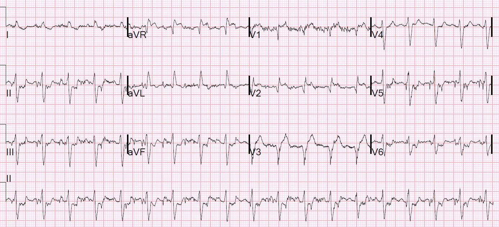
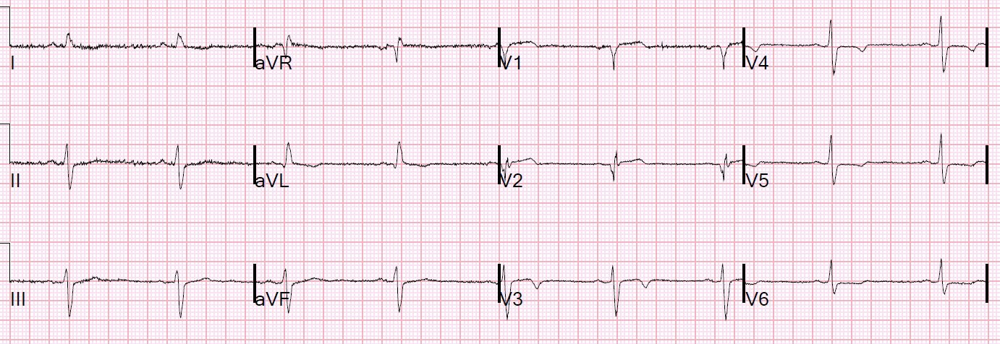
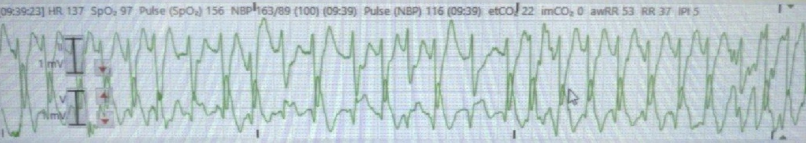
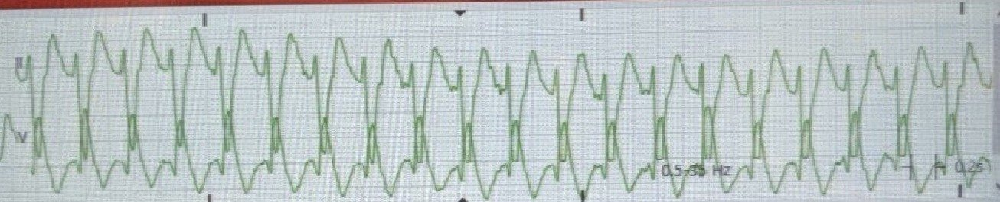
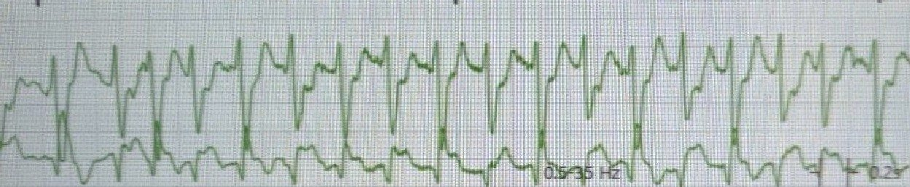
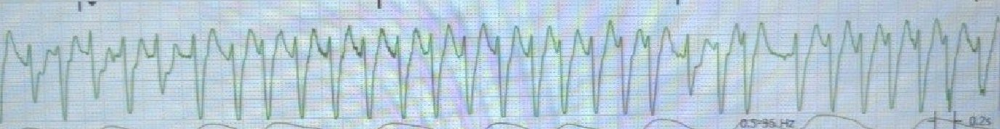
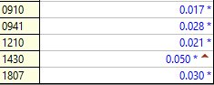
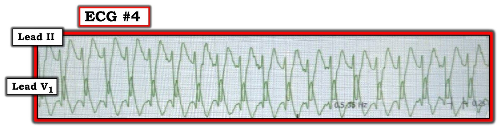
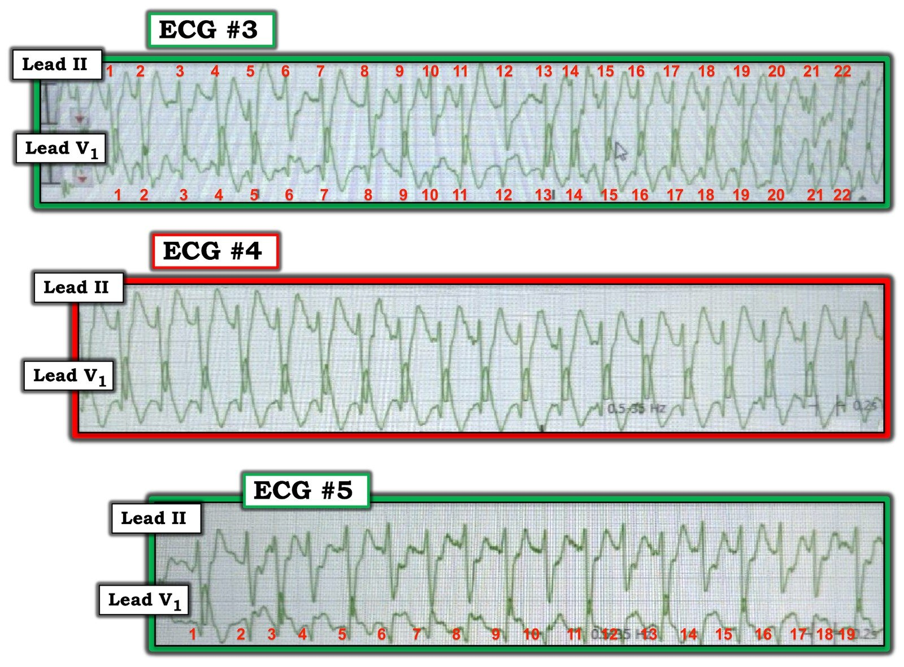

13/08/2020 — Khó chịu ở ngực, nhịp nhanh xoang, sóng Q, ST chênh lên và nhịp nhanh QRS rộng từng lúc. Có kích hoạt phòng thông tim không?
Bản dịch tiếng Việt của bài "Chest discomfort, Sinus Tachycardia, Q-waves, ST Elevation, and Intermittent Wide Complex Tachycardia. Activate the Cath Lab?" – Dr. Smith’s ECG Blog. Giữ nguyên toàn bộ 11 hình ảnh của bản gốc.
Điện tâm đồ này được nhắn tin cho tôi mà không kèm bất kỳ thông tin nào khác:


Bạn nghĩ sao? Dưới đây là câu trả lời của tôi.
Có nhịp nhanh xoang. Có blốc nhánh phải (RBBB) không hoàn toàn và blốc phân nhánh trái trước (LAFB). Có sóng QR ở aVL và V2, và sóng QS ở V3. Có ST chênh lên ở V2 và V3, với sóng T dương ở V2 và V3. Có ST chênh xuống soi gương (reciprocal) ở các chuyển đạo thành dưới và cả ở V5 và V6.
Đây là câu trả lời của tôi:
Nếu đúng bối cảnh lâm sàng, chẳng hạn khó chịu ở ngực cấp, thì hình ảnh này trông giống tắc đoạn gần động mạch liên thất trước kèm blốc nhánh phải và blốc phân nhánh trái trước. Do có nhịp nhanh, tôi sẽ nghĩ bệnh nhân có chức năng thất trái rất kém và có thể đang sốc tim.
Một khả năng khác là đây là một người có nhồi máu cơ tim cũ và hiện đang bệnh rất nặng vì một nguyên nhân khác.
Sau đó tôi xem hồ sơ bệnh án của bệnh nhân và tìm thấy một điện tâm đồ cũ:


Tôi nhắn lại:
“Tôi đang xem điện tâm đồ cũ của anh ấy. Có vẻ anh ấy cũng có nhồi máu cơ tim trước-bên cũ. Điều này gợi ý đây không phải hội chứng vành cấp.”
“Siêu âm tim trước đó một tháng của anh ấy cũng cho thấy điều tương tự: “phù hợp với nhồi máu cũ ở vùng cấp máu của LAD, với EF 45%”
“Tôi nghĩ có một nguyên nhân khác gây ra nhịp nhanh của anh ấy, làm phóng đại các dấu hiệu trên điện tâm đồ và giả dạng nhồi máu cơ tim cấp.”
Sau đó, tôi thu thập thêm bệnh sử lâm sàng.
Ban đầu, trước viện bệnh nhân được ghi nhận là khó thở (SOB), nhưng anh ấy phủ nhận điều này. Thay vào đó, anh ấy than “ngứa” ở ngực trái. Anh ấy có tiền sử bệnh cơ tim thiếu máu cục bộ và đột quỵ động mạch não giữa (MCA) phải.
Vào một thời điểm, người ta thấy anh ấy kém đáp ứng hơn và có lệch mắt sang trái.
Anh ấy được đưa đến khu hồi sức cấp cứu, nơi các nhịp sau được ghi nhận trên monitor:


Phù hợp với rung nhĩ kèm dẫn truyền lệch hướng






Huyết áp trong các nhịp này vẫn đủ; không có sốc.
Bệnh nhân tự chuyển về nhịp nhanh xoang.
Vào thời điểm này, họ ghi điện tâm đồ 12 chuyển đạo ở trên.
Phòng thông tim (cath lab) đã được kích hoạt và sau đó họ gửi điện tâm đồ cho tôi. Lúc này bệnh nhân đã tỉnh, lactat là 7 mEq/L, nên nghi ngờ co giật là nguyên nhân của tình trạng mất ý thức thoáng qua và lệch mắt.
Bác sĩ tim mạch đến đánh giá bệnh nhân.
Họ đồng ý rằng các dấu hiệu trên điện tâm đồ chỉ là do nhồi máu cơ tim cũ và nhịp nhanh. Việc kích hoạt phòng thông tim được hủy bỏ.
Đây là diễn biến troponin (troponin I thế hệ hiện hành (contemporary), giới hạn trên tham chiếu (URL) = 0,030 ng/mL):


Những điểm cần học:
1. Nhồi máu cơ tim cũ có ST chênh lên tồn tại dai dẳng (hình thái phình thất trái) có thể trông giống nhồi máu cơ tim cấp
2. Khi có nhịp nhanh, bạn nên nghi ngờ chẩn đoán hội chứng vành cấp (ACS), trừ khi đó là:
a) nhồi máu cơ tim diện rộng kèm sốc tim và do đó chức năng thất trái kém và thể tích nhát bóp thấp,
b) ở bệnh nhân đã có chức năng thất trái kém từ trước
c) kết hợp với một bệnh lý cấp tính khác gây nhịp nhanh
3. Không phải mọi phình thất trái thành trước đều có sóng QS. Khi có RBBB (kể cả không hoàn toàn), cái lẽ ra là sóng QS của nhồi máu cơ tim thành trước cũ đã hoàn tất sẽ biến thành sóng QS chỉ đơn giản vì bất thường dẫn truyền. [người dịch: nguyên văn ghi “QS-wave” ở cả hai chỗ, chỗ thứ hai nhiều khả năng là lỗi đánh máy của “QR-wave”]
Để xem ví dụ cho điểm 3, hãy xem 2 ca tại đường link này. Ở ca thứ hai, bệnh nhân đã bị dùng nhầm thuốc tiêu sợi huyết. Hơn nữa, có thể so sánh song song các điện tâm đồ khi có RBBB và khi dẫn truyền bình thường, vì RBBB ở đây liên quan tần số.
Dyspnea, Right Bundle Branch block, and ST elevation (Khó thở, blốc nhánh phải và ST chênh lên)
Đây là hai ca khác mà chẩn đoán phân biệt là OMI cấp với phình thất trái:
Is this acute STEMI? LV Aneurysm? Would you give Thrombolytics? (Đây có phải STEMI cấp? Phình thất trái? Bạn có cho thuốc tiêu sợi huyết không?)
9 Hours of Chest Pain and Deep Q-waves: Is it too late for Thrombolytics? (Time Window for Reperfusion; Acuteness on the ECG) (Đau ngực chín giờ và sóng Q sâu: Đã quá muộn để dùng thuốc tiêu sợi huyết? (Cửa sổ thời gian tái tưới máu; mức độ cấp tính trên điện tâm đồ))

===================================
BÌNH LUẬN CỦA TÔI, bởi KEN GRAUER, MD (13/8/2020):
===================================
Đây là một ca khó — càng khó hơn vì chất lượng chưa tốt của điện tâm đồ 12 chuyển đạo ban đầu — và vì thiếu thêm các chuyển đạo ghi đồng thời cho các bản ghi rối loạn nhịp. Nhưng đôi khi chúng ta phải xoay xở với bất kỳ bản ghi nào có sẵn …
Mặc dù tôi sẽ tập trung vào các dải nhịp ở chuyển đạo theo dõi — điều quan trọng là bắt đầu với điện tâm đồ 12 chuyển đạo. Theo diễn giải của Dr. Smith (ở trên) — dù có nhiễu đường nền rõ rệt trên điện tâm đồ 12 chuyển đạo ban đầu được nhắn tin cho ông — chúng ta có thể xác định rằng nhịp là nhịp xoang (tức là nhịp nhanh xoang ~110/phút) — và QRS rộng (tôi đo được 0,12 giây ở một số chuyển đạo) — với trục lệch trái rõ rệt phù hợp với LAHB.
- Tôi nghĩ khó nói được chúng ta đang gặp RBBB không hoàn toàn hay một dạng rối loạn dẫn truyền khác (tức là thiếu các đặc điểm của IRBBB là sóng s tận ở các chuyển đạo chi phía bên — và r’ tận chỉ xuất hiện từng lúc ở chuyển đạo V1 — tất cả lại càng phức tạp bởi nhồi máu cơ tim thành trước cũ và hình thái bất thường của phức bộ QRS ở chuyển đạo V2).
- Dù vậy — điều quan trọng là chúng ta biết điện tâm đồ ban đầu của bệnh nhân này tại khoa cấp cứu (ED) cho thấy cơ chế xoang với QRS giãn rộng và chủ yếu âm ở chuyển đạo II. Thông tin này hóa ra vô giá khi đánh giá các dải nhịp tiếp theo.
Tổng cộng — có 6 bản ghi trong ca này, gồm điện tâm đồ 12 chuyển đạo ban đầu, một điện tâm đồ 12 chuyển đạo cũ, và 4 dải nhịp.
- Cho rõ ràng — tôi đã đánh số các bản ghi theo thứ tự chúng xuất hiện ở trên trong phần bàn luận của Dr. Smith.
- LƯU Ý: Tôi không thấy nói rõ chuyển đạo phía dưới trong 3 dải nhịp đầu là chuyển đạo V1 hay MCL-1. Cả hai đều là chuyển đạo “bên phải” có đặc điểm hình thái tương tự — nên để đơn giản, tôi đã ghi nhãn các bản ghi là chuyển đạo V1.
CÂU HỎI:
Hãy tưởng tượng bạn CHỈ được xem điện tâm đồ #4, là bản ghi thứ 2 trong loạt dải nhịp ở trên. Bạn sẽ diễn giải bản ghi này thế nào? (Hình 1).


SUY NGHĨ CỦA TÔI về Hình 1: NẾU không có điện tâm đồ 12 chuyển đạo ban đầu, và bản ghi duy nhất bạn được cung cấp là điện tâm đồ #4 (là bản ghi thứ 2 trong loạt 4 dải nhịp) — tôi sẽ nói như sau:
- Có một nhịp WCT ( = nhịp nhanh QRS rộng – Wide-Complex Tachycardia) đều với tần số ~150/phút, không có dấu hiệu rõ ràng của hoạt động nhĩ. Chẩn đoán phân biệt gồm VT với SVT kèm hoặc blốc nhánh có sẵn từ trước hoặc dẫn truyền lệch hướng. Tần số thất ~150/phút có thể phù hợp với: i) VT; ii) Nhịp nhanh xoang (trong đó sóng P xoang bị ẩn trong sóng ST-T đi trước); iii) Một nhịp SVT vào lại (AVNRT hoặc AVRT); hoặc, iv) cuồng nhĩ (AFlutter).
Điểm MẤU CHỐT: Đối với nhịp chúng ta thấy ở Hình 1 — hình thái QRS không giúp ích trong việc phân biệt VT với một dạng nào đó của SVT. Đó là vì:
- Chúng ta chỉ có 2 chuyển đạo để xem … Dùng hình thái QRS làm đặc điểm phân biệt VT với SVT hiệu quả nhất khi bạn có điện tâm đồ 12 chuyển đạo, bên dưới có một hoặc nhiều dải nhịp ghi đồng thời. Ở đây chúng ta không có điều này.
- Mặc dù sóng lệch ban đầu ở chuyển đạo II của điện tâm đồ #4 trông khá hẹp — nó không hẹp “mảnh như nét bút chì”. Không thể loại trừ VT dựa trên sóng lệch ban đầu chưa mảnh như nét bút chì này ở một chuyển đạo duy nhất (Ngay cả khi sóng lệch ban đầu mảnh như nét bút chì ở 1 chuyển đạo này — điều đó cũng không loại trừ hoàn toàn khả năng VT).
- Mặc dù dạng QR ở chuyển đạo V1 có “phù hợp” với dẫn truyền kiểu RBBB — vì không có sóng lệch dương ban đầu (tức là không có sóng r ban đầu) — hình thái QRS ở chuyển đạo V1 của điện tâm đồ #4 không phân biệt được VT với dẫn truyền trên thất. Cả hai nhịp đều có thể xảy ra khi bạn thấy hình thái QR ở chuyển đạo V1.
ĐIỂM THEN CHỐT (PEARL) #1: Chú ý đến hình thái QRS có thể giúp ích vô giá cho việc diễn giải một số (không phải tất cả) nhịp nhanh QRS rộng. Dạng dẫn truyền lệch hướng hay gặp nhất là dẫn truyền kiểu RBBB (vì ở đa số người, nhánh phải có xu hướng có thời kỳ trơ dài nhất).
- NẾU bạn thấy một nhịp nhanh QRS rộng có đặc điểm điện tâm đồ của RBBB điển hình — thì điều này ủng hộ mạnh mẽ nguyên nhân trên thất. Hình thái RBBB điển hình cho thấy “chậm trễ phần tận cùng” trong khử cực thất — trong đó chính phần cuối của phức bộ QRS cho thấy các thay đổi. Với RBBB điển hình, cần có: i) Phức bộ rsR’ hoặc rSR’ ở chuyển đạo V1 (với sóng S đi xuống dưới đường nền); và, ii) Sóng S tận rộng ở các chuyển đạo bên I và V6.
- Dẫn truyền kiểu RBBB không phải lúc nào cũng biểu hiện hình thái QRS “điển hình”. Ví dụ, có thể thấy dạng QR ở chuyển đạo V1 khi có RBBB, thay vì rsR’ ba pha điển hình.
- ĐIỂM THEN CHỐT (PEARL) #2: Bất kỳ hình ảnh nào của một blốc dẫn truyền đã biết đều có thể gặp khi dẫn truyền lệch hướng (RBBB — hoặc LAHB, LPHB, LBBB; RBBB/LAHB, RBBB/LPHB). Do đó — một trong những gợi ý hữu ích nhất để nhận ra dẫn truyền lệch hướng là kiểu QRS giãn rộng giống một dạng nào đó của blốc dẫn truyền đã biết. Ngược lại — VT thường xuất phát từ một vị trí trong thất bên ngoài hệ thống dẫn truyền — đó là lý do các nhịp VT thường biểu hiện hình thái QRS “xấu xí hơn”, không giống bất kỳ loại blốc dẫn truyền đã biết nào. CẢNH BÁO: Mặc dù quy tắc chung này thường đúng — vẫn có ngoại lệ, hoặc do các loại VT như VT phân nhánh (Fascicular VT) có giống các hình ảnh blốc dẫn truyền đã biết — và/hoặc do một số bệnh nhân có hình thái QRS cực kỳ bất thường trên điện tâm đồ nền vì bệnh tim nền nặng. (Đây là lý do việc tìm được một bản ghi nền lúc nhịp xoang đôi khi lại rất hữu ích khi đánh giá hình thái QRS trong lúc nhịp nhanh QRS rộng).
ĐIỀU CỐT LÕI về Hình 1: Chẩn đoán xác định nhịp WCT đều ở điện tâm đồ #4 đơn giản là không thể chỉ dựa trên một dải nhịp 2 chuyển đạo duy nhất này.
QUAY LẠI với Ca bệnh hôm nay: Lý do tôi thích ca này — là việc tổng hợp mọi thông tin chúng ta có cho phép đi đến chẩn đoán có khả năng cao mà Dr. Smith đã đưa ra ở trên.
- Bệnh nhân hôm nay đã xuất hiện loạt 4 rối loạn nhịp nhanh được trình bày ở trên tại khu hồi sức của khoa cấp cứu. Bệnh nhân vẫn ổn định huyết động trong suốt thời gian có các rối loạn nhịp nhanh này!
- Tôi đã trình bày lại trong Hình 2 3 rối loạn nhịp nhanh đầu tiên trong 4 rối loạn nhịp nhanh ở trên. Giờ bạn đã có điện tâm đồ 12 chuyển đạo ban đầu — BẠN SẼ DIỄN GIẢI các nhịp ở điện tâm đồ #3, #4 và #5 thế nào?


SUY NGHĨ CỦA TÔI về Hình 2: “Tin tốt” — là vì bệnh nhân này vẫn ổn định huyết động trong suốt quá trình — nên chưa bao giờ cần sốc điện chuyển nhịp ngay lập tức.
- Trước tiên, xem ở Hình 2 điện tâm đồ #3 — nhịp nhanh và không đều hoàn toàn, không có dấu hiệu rõ ràng của hoạt động nhĩ. Như Dr. Smith đã nêu — điều này gợi ý rằng dù QRS giãn rộng, nhịp ở điện tâm đồ #3 là AFib với đáp ứng thất nhanh.
- QRS giãn rộng ở điện tâm đồ #3 không phải mới xuất hiện — vì chúng ta biết từ việc đánh giá điện tâm đồ 12 chuyển đạo ban đầu rằng QRS nền đã rộng (với phần chủ yếu âm ở chuyển đạo II, có hình thái tương tự nhiều nhát bóp thấy ở chuyển đạo phía trên của điện tâm đồ #3).
- Nhiều nhát bóp ở điện tâm đồ #3 cho thấy giãn rộng thêm. Điều này dễ thấy nhất ở chuyển đạo V1 đối với các nhát #1,2, 4,5, 7, 9, 11, và từ 13 đến 22. Ủng hộ thêm cho việc nhịp này là AFib chứ không phải VT là các dấu hiệu: i) Nhịp duy trì cùng một kiểu không đều hoàn toàn trong suốt bản ghi bất kể QRS có giãn rộng thêm hay không; và, ii) Sóng lệch âm ban đầu ở các nhát hẹp hơn trong điện tâm đồ #3 có hình dạng tương tự phần đầu của QRS ở các nhát rộng hơn. Điều này dễ thấy nhất ở chuyển đạo V1. Khác biệt cốt yếu về hình thái QRS giữa nhát hẹp hơn và nhát rộng hơn là chậm trễ phần tận cùng (sóng R cao) — và điều này phù hợp với dẫn truyền lệch hướng kiểu RBBB.
Tiếp theo, hãy xem điện tâm đồ #5:
- Nhịp này lại không đều hoàn toàn và không có bằng chứng hoạt động nhĩ — nên nhịp này lại là AFib với đáp ứng thất nhanh.
- Chuyển đạo V1 ở điện tâm đồ #5 đặc biệt có giá trị chẩn đoán. Hãy để ý cách mỗi nhát trong 19 nhát ở chuyển đạo V1 đều bắt đầu bằng một sóng lệch âm gần như giống hệt nhau. Gắn thêm vào sóng lệch âm này, gần như cách một nhát, là chậm trễ phần tận cùng tạo ra sóng R tận cao ở các nhát #1, 3, 5, 7, 9, 11, 13, 15 và 19. Sóng lệch ban đầu giống hệt nhau ở chuyển đạo V1 kèm chậm trễ phần tận cùng này xác lập dẫn truyền lệch hướng kiểu RBBB là nguyên nhân của QRS giãn rộng thêm.
Cuối cùng — hãy xem lại điện tâm đồ #4. Không giống điện tâm đồ #3 và #5 — nhịp ở điện tâm đồ #4 khá đều. Chúng ta đã bàn ở trên rằng NẾU tất cả những gì bạn có để xem chỉ là điện tâm đồ #4 — thì không thể phân biệt VT với SVT chỉ từ một dải nhịp nhanh QRS rộng đều duy nhất này. Nhưng trong bối cảnh có điện tâm đồ 12 chuyển đạo ban đầu và 2 dải nhịp bổ sung ở Hình 2 — chúng ta có thể khẳng định nguyên nhân trên thất ở điện tâm đồ #4.
- Chẳng phải hình dạng phức bộ QRS ở chuyển đạo II của điện tâm đồ #4 trông rất giống hình dạng phức bộ QRS ở dải nhịp chuyển đạo II dài phía dưới điện tâm đồ 12 chuyển đạo ban đầu sao?
- Chẳng phải hình dạng phức bộ QRS ở chuyển đạo V1 của điện tâm đồ #4 trông rất giống hình dạng phức bộ QRS của các nhát #1, 3, 5, 7, 9, 11, 13, 15 và 19 ở điện tâm đồ #5 — những nhát mà chúng ta đã xác lập là được dẫn truyền lệch hướng kiểu RBBB — sao?
ĐIỀU CỐT LÕI: Diễn giải các rối loạn nhịp nhanh trong ca này rất phức tạp. Hy vọng ít nhất một vài điểm gợi ý ở trên sẽ đủ để nghi ngờ nguyên nhân trên thất cho mỗi rối loạn nhịp nhanh này.
- Do bệnh nhân không có triệu chứng từ các rối loạn nhịp này — đã có thời gian để cân nhắc các biện pháp bổ sung. Việc tự chuyển về cơ chế xoang trong ca này đã khiến không cần can thiệp thêm.
- ĐIỂM THEN CHỐT CUỐI CÙNG (PEARL) #3: Khi AFib nhanh — thoạt nhìn nhịp có thể trông như đều. Tuy nhiên, quan sát cẩn thận (và đo bằng compa (calipers)) cho thấy có sự không đều hoàn toàn ở điện tâm đồ #5, về cơ bản khẳng định nhịp này là AFib nhanh.
- T.B. (P.S.): Để xem thêm một ví dụ về dẫn truyền kiểu RBBB từng lúc, trong đó sóng lệch ban đầu tương tự kèm chậm trễ phần tận cùng đã giúp nhận ra dẫn truyền kiểu RBBB — Vui lòng XEM bài ngày 25 tháng Sáu năm 2020 trên Blog của Dr. Smith.